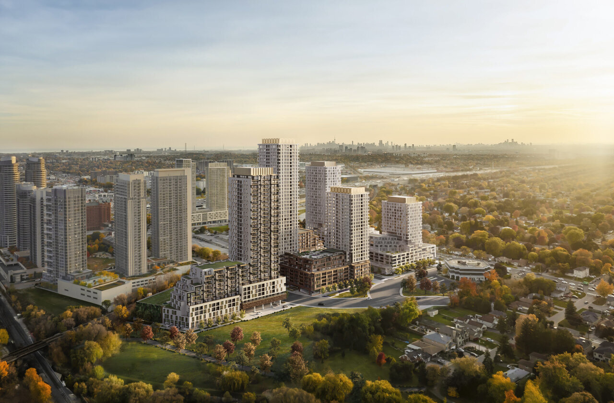

20+
Years of Experience
Structural design, assessment, rehabilitation, technical review and research.
More than 20 years of experience in design, assessment, rehabilitation, technical review, construction support and applied research across Canada and Bangladesh.
Design, assessment, rehabilitation, advanced structural analysis and applied research across transportation, buildings and specialized infrastructure.
Structural design, assessment, rehabilitation, technical review and research.
Design · Assessment · Rehabilitation · Load evaluation · Construction support.
Nonlinear analysis · Response spectrum · Time history · Performance evaluation.
Wind-load analysis · Wind-tunnel experiments · Aeroelastic hybrid simulation.
High-rise buildings · Healthcare · Towers · Industrial · Nuclear infrastructure.

Owner-side technical review and construction support for seven new bridges and seven new culverts within a major greenfield highway program.
View case study →Structural review and construction engineering support for bridge, retaining and foundation works at a major interchange.
View case study →
37-storey, 125.3 m mixed-use residential tower with 322 rental units, commercial parking and street-level retail.
View case study →
Structural engineering contribution to Block 6, a 32-storey residential tower within a multi-phase mixed-use redevelopment in Scarborough.
View case study →
Structural engineering for preliminary and detailed design of a major healthcare campus in Ottawa.
View case study →
Structural design of a 15-storey, approximately 200,000 sq. ft. academic medical building in Gazipur, Bangladesh.
View case study →
Assessment of construction deficiencies in a heavily reinforced transfer slab, including mapping, structural implications, testing needs and repair-planning considerations.
Read the technical insight
A field-validation case study focused on instrumented bridge response, measured behaviour, analytical correlation and asset-management decision support.
View case study